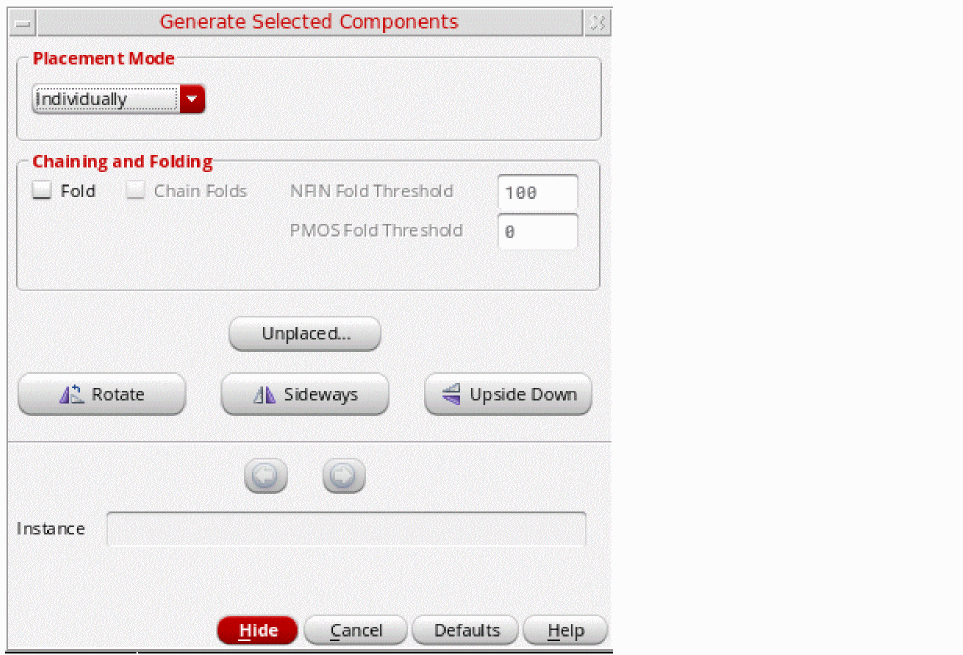
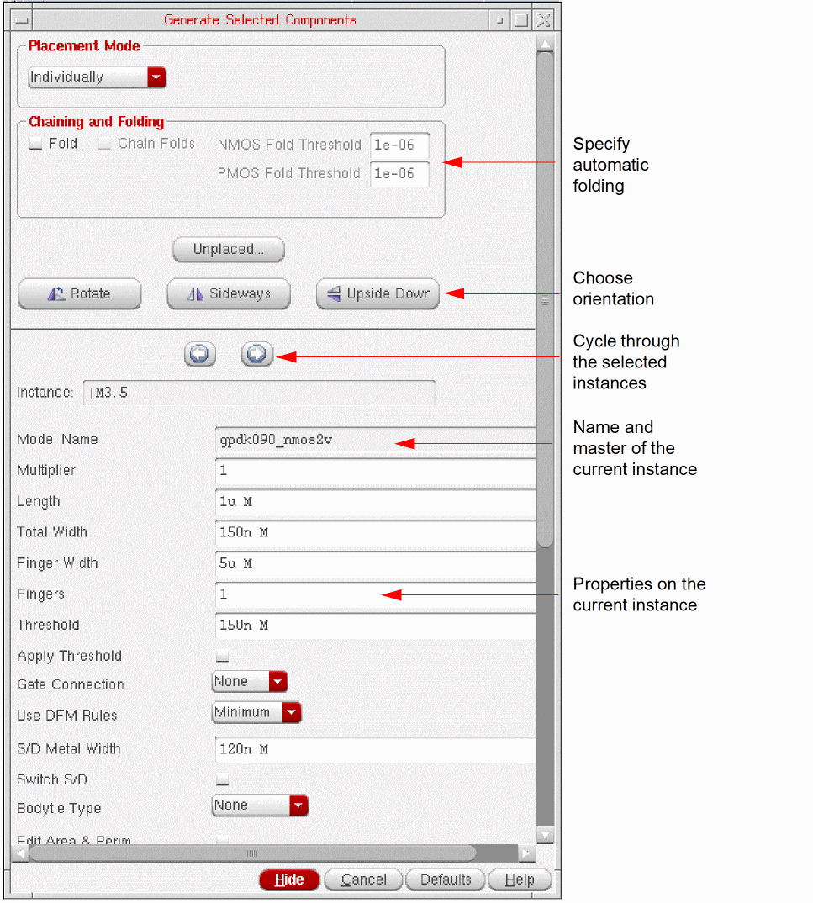

Generating Individual Instances
To generate schematic instances one at a time in the layout view:
-
From the layout window menu bar, choose Connectivity – Generate – Selected From Source.
The Generate Selected Components form is displayed (pressF3if it is not displayed).
 - In the Placement Mode group box, choose Individually from the drop-down list.
-
In the schematic window, select the instances you want to generate using one of the following methods:
-
Click the components in the schematic canvas or Navigator assistant. To select multiple components, keep the
Shiftkey pressed during selection or area-select the components. To deselect a component, click the component while theCtrlkey is pressed. - Click Unplaced to view the Instance/Pin List form. In the form, select the components to place and click Apply to select them in the schematic window. See Listing Unplaced Components after Layout Generation.
The selected instances remain highlighted until they are either deselected or generated in the layout view. You can select an instance in the schematic if it is not already bound to an instance in the layout. If there is an existing layout instance with a matching name which is not bound to the selected schematic instance, the name of the instance generated in layout is controlled by therenameConflictingLayoutInstancesenvironment variable.
Alternatively, right-click the ungenerated instances in the layout Navigator assistant and choose Generate Selected From Source. PressF3if the form does not displayed automatically.
The form expands to show the name and master of the first instance in the selected set (the current instance), along with the properties set on that instance, as shown in the figure below.
 -
Click the components in the schematic canvas or Navigator assistant. To select multiple components, keep the
-
Move your pointer into the layout canvas.
The outline of the current instance follows the pointer in the layout window. -
Set the options and property values you want.
-
Select Fold to automatically fold the current instance.
If thedisableFoldingenvironment variable is set and the folding threshold for the component type is set to0, folding is disabled. - Select Chain Folds to automatically chain the folded instance.
- Choose the orientation for the instance using the Rotate, Sideways, and Upside Down buttons.
- Change the instance property values, if required. The instance properties are not shown when Fold is selected. To update a property, you must first turn off Fold.
The Chaining and Alignment options are disabled because you are placing only one instance at a time. -
Select Fold to automatically fold the current instance.
-
Click in the layout canvas to place the current instance at the required location.
If the layout library and cellview are different from those of the schematic, the command copies all the parameters (including default parameters) into the layout view. If any of the default parameter values in the schematic is an empty string, this can cause Pcell evaluation to fail.
If you selected more than one instance, the next instance in the list becomes the current instance in the form. You can use the Previous and Next arrow buttons at the top of the properties section to quickly move back or forward through the set of selected instances without generating them. - Repeat steps 4 through 6 to generate the next instance.
Related Topics
renameConflictingLayoutInstances
Return to top